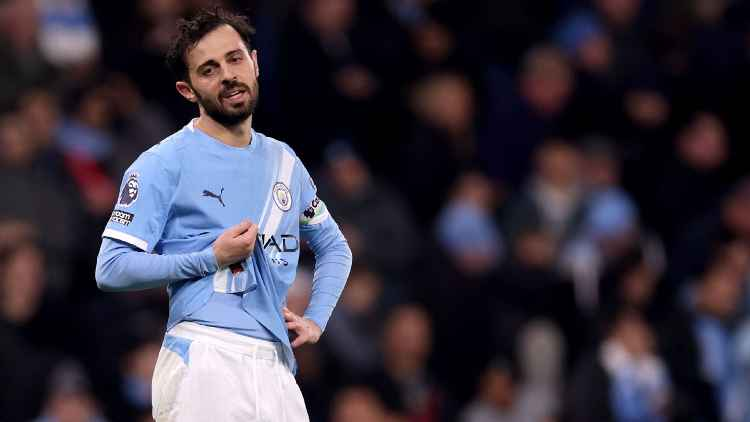
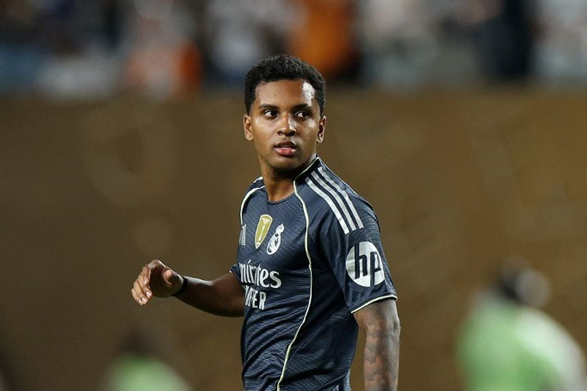
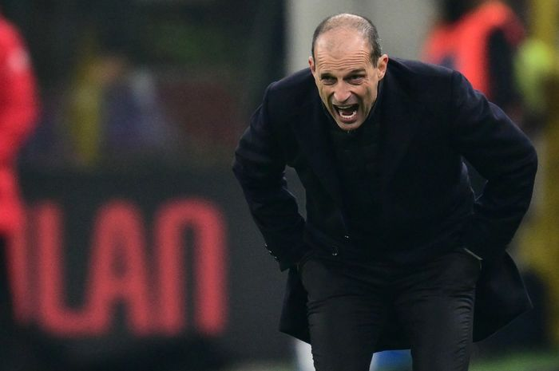

RUMOR SEPAK BOLA
Manchester United dan Liverpool memperebutkan 1 Pemain
.jpeg)
Rumor hangat kali ini datang dari kedua tim besar Premier League, Manchester United dan Liverpool. Manchester United dan Liverpool meningkatkan minat mereka pada bintang AS Monaco, Maghnes Akliouche.
Kunjungi WebsiteBarcelona dan Juventus memimpin persaingan untuk mendapatkan Bernardo Silva

Gelandang Manchester City, Bernardo Silva, diperkirakan akan hengkang musim panas ini dan diminati oleh Barcelona dan Juventus, sementara Real Madrid semakin yakin dapat mengamankan transfer gelandang City, Rodri.
Kunjungi WebsiteRumor Bintang Madrid ke Chelsea Menguat, Fabrizo Romano Bocorkan Situasi Sebenarnya

Pakar transfer Fabrizio Romano mengungkap situasi terbaru terkait rumor transfer Rodrygo dari Real Madrid ke Chelsea.
Bintang Real Madrid, Rodrygo Goes, memang kembali menjadi sorotan menjelang bursa transfer musim dingin.
Pemain Timnas Brasil itu belum menemukan perannya di bawah Xabi Alonso. Masa depan Rodrygo di Real Madrid pun kembali menjadi bahan pembahasan.
Kabar Terbaru Rumor Conor Gallagher Gabung MU, Fabrizio Romano Beri Update Terkini
Pakar transfer Eropa, Fabrizio Romano memberikan update seputar transfer Conor Gallagher ke Manchester United. Ia menyebut bahwa proses transfer ini bisa terjadi jika Setan Merah berani keluar uang untuk sang gelandang.
Gallagher memang diketahui lagi tidak bahagia di Atletico Madrid. Sang gelandang mendapatkan menit bermain yang terbatas dari Diego Simeone di lini tengah Los Rojiblancos.
Situasi ini membuat sang gelandang dikabarkan ingin pindah klub di musim panas nanti. Klub Inggris, Manchester United dilaporkan sangat tertarik untuk mengamankan jasa sang gelandang.
Rumor Italia Tak Goyahkan Allegri, Prioritas Utama Bawa AC Milan Kembali ke Liga Champions

Dirumorkan masuk dalam kandidat pelatih Timnas Italia, Massimiliano Allegri tetap prioritaskan AC Milan untuk kembali ke Liga Champions.
Timnas Italia baru saja gugur dalam perjalanannya menuju Piala Dunia 2026. Imbas dari kegagalan ketiga kalinya secara beruntun ke Piala Dunia, jajaran pelatih hingga presiden FIGC memutuskan mundur serentak.